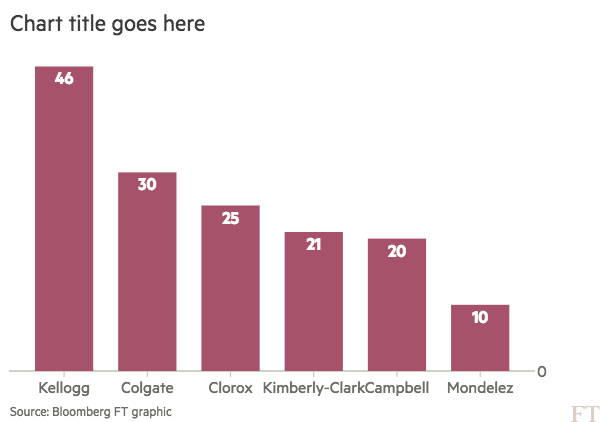

1. Debt v EBITDA — Best value: Mondelez
outworn its usefulness. It has nothing to do with correct grammar and syntax,
which are of no importance so long as one makes one's meaning clear, or with.

2. Enterprise value — Best value: Colgate
outworn its usefulness. It has nothing to do with correct grammar and syntax,
which are of no importance so long as one makes one's meaning clear, or with.
3. 2018 EPS Accretion to Kraft — Best value: Clorox
outworn its usefulness. It has nothing to do with correct grammar and syntax,
which are of no importance so long as one makes one's meaning clear, or with.
{% markdown %}
To begin with it has nothing to do with archaism, with the salvaging of
obsolete words and turns of speech, or with the setting up of a "standard
English" which must never be departed from. On the contrary, it is
especially concerned with the scrapping of every word or idiom which has
outworn its usefulness. It has nothing to do with correct grammar and syntax,
which are of no importance so long as one makes one's meaning clear, or with.
{% endmarkdown %}
{% endblock %}